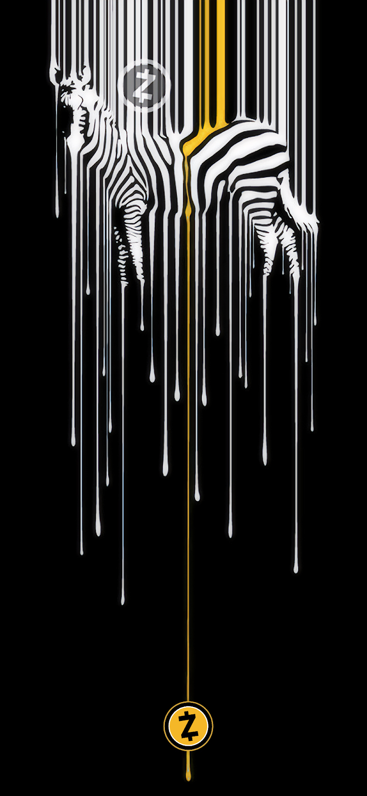

Got an interesting project to discuss?
Send me an email!


Got an interesting project to discuss?
Send me an email!
The following is a casestudy of work done for The Electric Coin Company, showcasing Zcash and Mobile Wallets.
Cryptocurrency
Privacy-First
Mobile Payments
Design Leader
Collaborative
Mentoring
Hands-On
Team player
Figma/Sketch/XD
UX Reseach & Testing
UX/UI Design
Interation Design
Service Design
 The Zcash blockchain-based payment network leverages zero-knowledge proofs allowing shielded transactions from public eyes. The technology worked smoothly, but usability was low. A user was required to have an expert level of understanding and run a node to interact with through a CLI. There were more pain points around the four different types of transactions: transparent or shielded with qualities of shielding or deshielding. The users didn't understand that their privacy coin was not private by default as the protocol's description implied! This was a huge mistake in the conversation with users, and the technical explanations only further muddied the waters. Government regulation (FATF/IRS) and centralized exchanges required a transparent address (or leveraging of viewing keys), but users were not educated well enough to know they needed to create a shielded address to unlock the protocols privacy. Part of my job would be to try and fix this basic misunderstanding and repair that relationship, but the majority would be to ensure new users were educated inline with adopting ZEC usage.
The Zcash blockchain-based payment network leverages zero-knowledge proofs allowing shielded transactions from public eyes. The technology worked smoothly, but usability was low. A user was required to have an expert level of understanding and run a node to interact with through a CLI. There were more pain points around the four different types of transactions: transparent or shielded with qualities of shielding or deshielding. The users didn't understand that their privacy coin was not private by default as the protocol's description implied! This was a huge mistake in the conversation with users, and the technical explanations only further muddied the waters. Government regulation (FATF/IRS) and centralized exchanges required a transparent address (or leveraging of viewing keys), but users were not educated well enough to know they needed to create a shielded address to unlock the protocols privacy. Part of my job would be to try and fix this basic misunderstanding and repair that relationship, but the majority would be to ensure new users were educated inline with adopting ZEC usage.
The design brief evolved overtime, but the final goal was a functioning public wallet. What drew me to this project was their mandate of helping the world establish financial freedom with the mantra 'Privacy is a human right'. It also allowed me to collaborate with cryptographers working on exotic math and translate my traditional banking experience to the blockchain.
Zcash renamed themselves The Electric Coin Company to create a clear difference between the protocol/token and themselves as partial stewards of the coin.
There is a second steward, the Zcash Foundation, which also works for the protocol’s benefit. This is to ensure decentralization. I worked full time for ECC, but also collaborated with ZF extensively. Within this case study, for the sake of clarity, I will be talking about Zcash as a product (and will use that name consistently).
My starting responsibility was to bootstrap a team and start working with leadership to create a public product. My initial mandate was to create the mobile wallet designs, hire developers, and provide design support for implementation. While interviewing developer candidates, we immediately spun up a user research project and found our first problem: How do you find users to interview if the product is completely secure and private? How do you get anonymous people to raise their hand into the air and announce themselves? This was going to be a fun project.
Our investigative solution was two-fold:
1. We performed canvassing or 'on-the-street' interviews of people at a number of cryptocurrency conferences. We questioned them with the goal of having them self-identify as a group (to help us define personas), and to gather feedback on a click-through wireframe of the prototype. We wanted an idea of general user experience to forecast pain points and give us a heads start. This is also sometimes called the 'Zooko method' as he would daily use ZEC to pay and tip baristas.
2: We requested feedback through forums and social media. The feedback was gathered with a google form with anonymous entry allowed. Again users were asked to self identify as to what type of user they considered themselves. A script requested they click through tasks, give their thoughts on the difficulty, and finally let us know of any ideas or feature requests they wish to share.


All of this user research allowed us to validate enough of our assumptions to create personas and decide on which mobile platform (Android/iOS) we would use to design the initial prototype. We created a rapid prototype and tested it on usertesting.com. It was a small sample size, with the interview only requiring that the user knew about cryptocurrency, and a script that had them create a wallet, receive and send funds, and view the transaction details.
We created a rapid prototype and tested it on usertesting.com. It was a small sample size, with the interview only requiring that the user know about cryptocurrency, and a script that had them create a wallet, receive/send funds, and view the transaction details.
We targeted developers - believing that if we created the tools the ecosystem would help build itself. This was proven somewhat true, but future network upgrades made this tricker than we had expected. It should be mentioned that marketing had a different set of personas which prioritized getting ZEC listed on more exchanges and general Zcash education. Regardless, we choose to thoroughly follow our goal of creating financial freedom for all, and picked Android as our first platform. At the time, Android could reach, with supported OS versions, 97% of their base - so we could reach more users in emerging economies and make remittance available across the globe.
About this time we had our proof-of-concept: a wallet app that could create zk-proofs on the device and work with a server to send/receive funds without any break in privacy. We were off to a good start!
The proof of concept was based on wireframes and rough sketches. While we had gotten feedback from user testing, that was with an invision click through prototype - not real proofs and blockchain transactions. This version of the app proved what we believed possible, and set us clearly as the only coin with true privacy. Below you can see the wireframes used to validated this PoC.
We gathered final (for this phase) feedback from the stakeholders and started to implement synthesized changes from all the earlier designs and prototypes. We used these findings and the Proof-of-Concept to create a Reference Wallet; an open-source wallet on Android (which embraced the Material Design system from Google). All code and assets were published and offered to 3rd parties to bootstrap their own wallet.

After the Reference Wallet was released we did a second round of user research with added facets. Now that we had a fully functioning product we were able to truly test all the user flows and we did this in two ways:
1: We created a dogfooding project within the company. All employees would use the application to receive a small part of their paycheck in ZEC. This forced everyone to be our end-user and created a constant feedback loop we could iterate off of.
2: We had an SDK available to the public that allowed other organizations to bootstrap their own Zcash app. Nighthawk and Zecwallet stood up to do this, with Unstoppable and Edge only taking on the evolved APIs to work within their current FFI landscape.
Now that we had battle tested applications and external feedback, we grew the team to support both Android and iOS. We created designs and code to support both light and dark modes, internationalization, and accessibility. ECC is still in the process of implementing designs and animations, and has recently released a second SDK!

A youtube playlist with a handful of animation and interactions. There is also a full demo from an earlier build.
A discussion on the ECC Wallet's past and future from Zcon3. Geffen and Pacu focus on the experience of building the app from scratch, the lessons they learned, and where they plan to go next. They dig into how NU5 evolved the mobile app and how user feedback in real situations has helped. Additionally, the expound on future features and known hurdles.
A mobile styleguide created by Geffen to provide UI design and development guidance. Additionally it fosters best practices, and deliver consistency across the user experience.
A reference implementation is concrete and functioning code that proves that a concept can work. Our reference wallet proves that Zcash shielded transactions can work on mobile devices with limited resources. This blog post digs deeper into our UX considerations and provides an overview of our design decisions and rationale.
This is a youtube link of a video from the first Denver Zcash Meetup where we introduce the mobile wallet and show Proof of Concept designs.
About Zcash / ECC / ZF